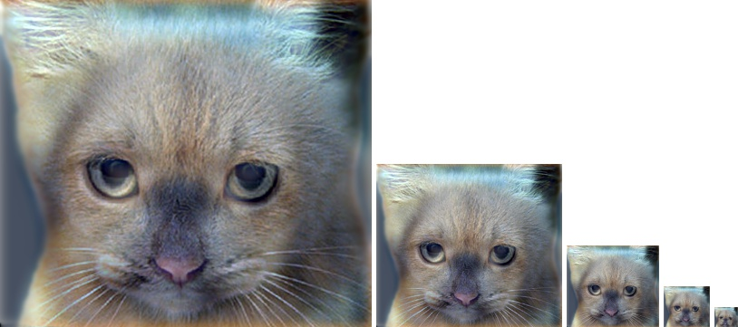
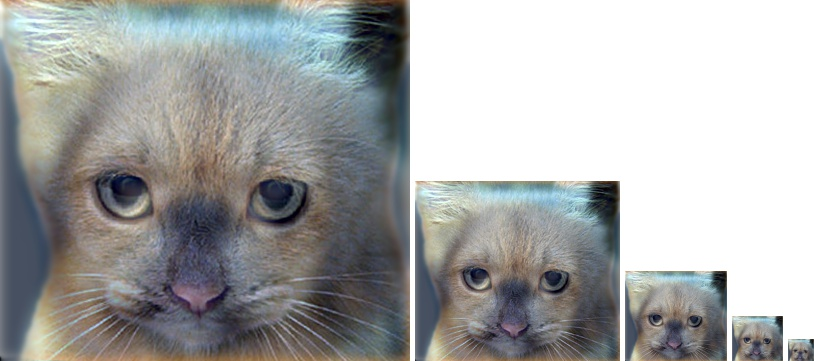
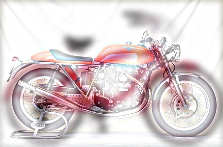
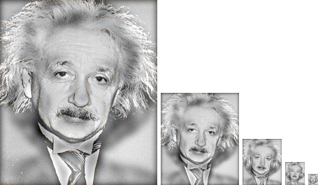

Project 1: Image Filtering and Hybrid Images

Hybrid Image of High frequency part of Einstein
and Low frequency part of Marilyn.
The image filtering methods have significant applications in image processing. In this project, different image filtering methods are implemented by using an image filter function, which returns a filtered image with given kernel matrix. Then the filter function is used to create a hybrid images contains different frequency components of different images. The hybrid images are interesting to see because high frequency tends to dominate the human perception when the viewing distance is close. But at a distance, only the low frequency part of image can be seen. With combination of high and low frequency from different images, the hybrid images leads to different view effects at different distances.
This report contains following subjects:
- Image Filtering Implementation
- Hybrid Images
- Results
- Conclusion
Image Filtering Implementation
Before we implemnet the image filtering, we need to understand what is an image. The digital images (gray scale) contains a matrix of intensity values. If the image were 8 bit, the intensity values may vary from 0 to 255. We can think the images as a function in space R2. As with any function, we can apply operators to an image. The image filter acts as an operator to the image. It modifies the pixels in an image based on some function of a local neighborhood of each pixel.
In this project, we first implement an gaussian filter. The gaussian filter helps remove high frequency filter and acts as a low pass filter. It can blur the images if we apply this filter. It's easy to change the standard deviation σ in gaussian function to change the blur effects. With larger σ, the cut off frequency is higher thus the lower frequency part of image would remain. Please see the following images with increasing σ.
In the practical implementation, the image filtering code needs to identify the dimensions of the input image, i.e. the grayscale or RGB image. After that, zero padding should be added to around the input image to make edge pixels have local neighborhood and to apply the filter. The boundary of following images appears balck because filter takes account of those padded zeros. It can be avoided by padding images it self in the boundary.
Orignial dog.bmp and filtered dog.bmp with σ=3, σ=7, σ=15


|
Beisdes gaussian filter, an Identity filter, small blur with a box filter, large blur filter, Sobel filter and high pass filter are also implemented in this project. Please see the foollowing images. An idenity matrix just return an image itself without changing anything. The small blur filter average out around each pixel. It can reduce some noise. A large blur filter is just an gaussian filter with bigger sigma and ksize, which filter more high frequency. However, it might be slow to do the convolution calculation directly due to large matrix size. Since gaussian blurs are separable ,we can blur sequentially in each direction of image. The amount of calculation time will be reduced because less total number of calculations. Sobel filter will find gradients in x or y direction, which is very useful in edge detection. Another useful edge dection filter is laplacian filter, which measures 2nd derivative of an image. It can highlights the parts in image with rapid intensity changes.
Cat.bmg filtered with an Identity filter, small blur with a box filter, large blur filter, Sobel filter and high pass filter are also implemented in this project(from left to right)

|
Hybrid Images
A hybrid image is a picture that combines the low-spatial frequencies of one picture with the high spatial frequencies of another picture producing an image with an interpretation that changes with viewing distance. The gaussian filter is used to find the low frequency component of image. The high frequency components are simply calculated by using orignal image minus low frequency components. To get best viewing reuslt, different cut-off frequency are necessary for different images. It's necessary to balance between bluring and sharping of two images. Usually, we will have a good reuslt if we can find a cutoff frequency which keeps blured dominated features from blured image(low frequency) and we combine it with the noticeable mask from sharping image (high frequency).
Please see the following example:
Hybrid dog and cat images with cut-off frequency = 7 pixels

 

|
Results
Some hybrid images with low and high frequencis filterd images
|  |
|

|
From these hybrid image pairs, we found that a good hybrid images needs good overlap from two images. When we perceive one image, the other one should be perceived as noise. The low spatial frequencies images doesn't have clear boundary at close distance. The high frequenies images with clear shape and boundary will dominate our perception. So how do we tweak the cut off frequencies to get good hybrid images? The answer is when we set the cut off frequencies for low and high frequenies images, there shoud be a gap between cut off frequencies. It help viewer group an interpretation of the image.
Conclusion
The image filtering methods in this projects are simple but very powerful tool. We implemented different kernel to the images and created some hybrid images. Interesting project!